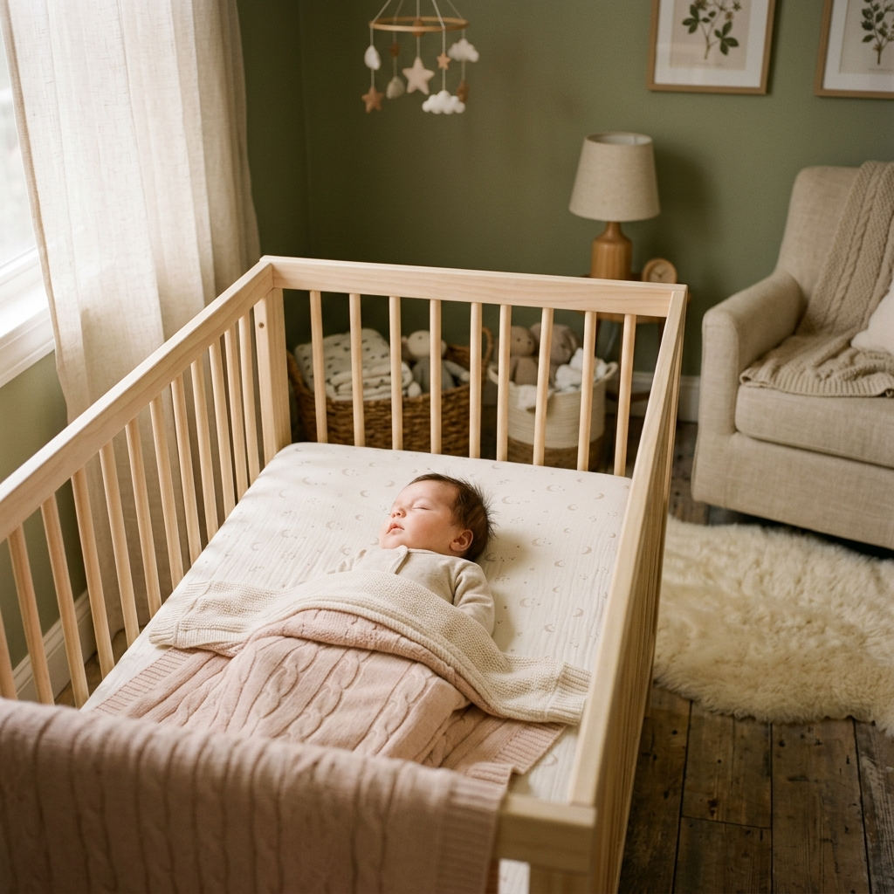

Descubra como fazer seu bebê dormir mais de 10 horas seguidas — já nas próximas semanas
O problema não é o seu bebê... são os sistemas de sono dele que estão desorganizados. Por isso criamos o Método Noite Tranquila com a missão de acabar com a privação do sono e com a exaustão materna.
Além do curso online completo, entrando hoje, você receberá acesso à uma Consultora do Sono Certificada (de graça!)

Aqui trabalharemos o passo a passo completo de um ambiente seguro e adequado para o bebê dormir bem.
Sim. Rotinas específicas de 0 a 2 anos.
Não. O método é 100% gentil.
Imediatamente no seu e-mail após a compra.
Sim! O método foi desenhado para mães exaustas que não têm um minuto sobrando. São rituais rápidos de 20 minutos que economizam horas de choro depois.
Você já abriu mão de noites demais. Seu bebê merece dormir bem. Você merece descansar.
SIM, ESSA NOITE VAI SER DIFERENTE →